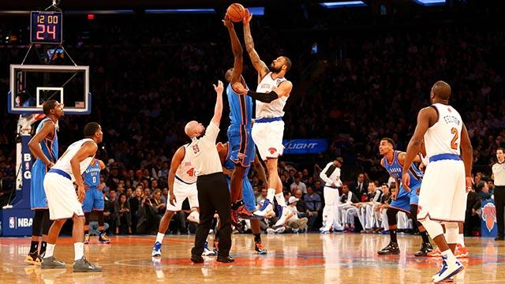

Przed rozpoczęciem meczu koszykówki sędzia podrzuca piłkę w kole na środku boiska, dwóch zawodników przeciwnych drużyn stara się ją zbić do swoich partnerów. Drużyna, która wygrywa rzut sędziowski rozpoczyna mecz (tzn. po zbiciu nie przerywając gry przeprowadza atak). Preferuje się, aby sędzia podrzucający piłkę podczas rzutu sędziowskiego nie trzymał gwizdka w ustach.
